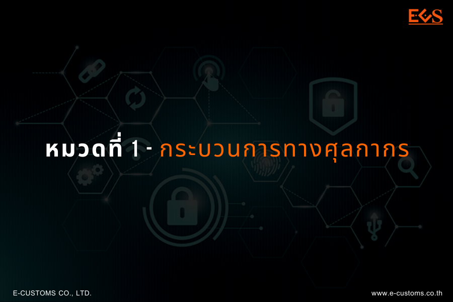

หมวดที่ 1 กระบวนการทางศุลกากรโดยวิธีทางอิเล็กทรอนิกส์
ข้อ 2 เพื่อประโยชน์แห่งการดำเนินกระบวนการทางศุลกากร
ข้อ 2 เพื่อประโยชน์แห่งการดำเนินกระบวนการทางศุลกากร การปฏิบัติพิธีการศุลกากรสามารถกระทำโดยวิธีการทางอิเล็กทรอนิกส์ก็ได้
- ภายใต้หลักเกณฑ์ของกฎหมายว่าด้วยธุรกรรมทางอิเล็กทรอนิกส์ ในการปฏิบัติพิธีการศุลกากรทางอิเล็กทรอนิกส์
- 1.1. ห้ามปฏิเสธความผูกพันและการบังคับใช้ทางกฎหมายของข้อความใดเพียงเพราะ เหตุที่ข้อความนั้นอยู่ในรูปของข้อมูลอิเล็กทรอนิกส์.
- 1.2. ในกรณีที่กฎหมายกำหนดให้การใดต้องทำเป็นหนังสือ มีหลักฐานเป็นหนังสือ หรือมีเอกสารมาแสดง ถ้าได้จัดทำข้อความขึ้นเป็นข้อมูลอิเล็กทรอนิกส์ที่สามารถเข้าถึงและนำกลับมาใช้ได้ โดยความหมายไม่เปลี่ยนแปลง ให้ถือว่าข้อความนั้นเป็นหนังสือ มีหลักฐานเป็นหนังสือ หรือมีเอกสารมาแสดงแล้ว
- 1.3. ในกรณีที่ต้องลงลายมือชื่อในหนังสือ ให้ถือว่าข้อมูลอิเล็กทรอนิกส์นั้นมีการลงลายมือชื่อแล้ว ถ้าได้ดำเนินการตามมาตรฐานที่กรมศุลกากรกำหนด
- การปฏิบัติพิธีการศุลกากรให้สามารถกระทำได้โดยวิธีการทางอิเล็กทรอนิกส์ โดยส่งข้อมูลอิเล็กทรอนิกส์พร้อมลงลายมือชื่ออิเล็กทรอนิกส์ (Digital Signature) ของเจ้าของลายมือชื่อ ผ่านบุคคลที่เป็นสื่อกลางผู้ให้บริการรับส่งข้อมูลทางอิเล็กทรอนิกส์ (Value Added Network Services : VANS) เข้าสู่ระบบคอมพิวเตอร์ของศุลกากรทางอิเล็กทรอนิกส์ตามมาตรฐานที่กรมศุลกากรกำหนด (ebXML/ XML Format) แทนการจัดทำ ยื่น ส่ง รับเอกสาร และการลงลายมือชื่อในกระดาษ
- การส่งข้อมูลอิเล็กทรอนิกส์ของผู้ส่งข้อมูลเข้าสู่ระบบคอมพิวเตอร์ของศุลกากรทดแทนเอกสารใด ๆ หากระบบคอมพิวเตอร์ของศุลกากรผู้รับข้อมูลได้ทำการตอบรับข้อมูลอิเล็กทรอนิกส์นั้นในการปฏิบัติพิธีการแล้ว ถือเป็นการยื่นเอกสารนั้น ๆ ตามกฎหมายว่าด้วยศุลกากรและกฎหมายอื่นที่เกี่ยวข้องกับการศุลกากรแล้ว
ส่วนที่ 1 การลงทะเบียน
ข้อ 3 ผู้ประสงค์จะปฏิบัติพิธีการศุลกากรหรือดำเนินการในกระบวนการทางศุลกากร โดยวิธีการทางอิเล็กทรอนิกส์
ส่วนที่ 2 กระบวนการทางศุลกากรโดยระบบการให้บริการเบ็ดเสร็จ ณ จุดเดียว
ข้อ 4 กระบวนการทางศุลกากรโดยระบบการให้บริการเบ็ดเสร็จ ณ จุดเดียว (Single Window)
ส่วนที่ 3 การรับรองข้อมูลในการปฏิบัติพิธีการศุลกากรทางอิเล็กทรอนิกส์
ข้อ 5 การรับรองข้อมูลในการปฏิบัติพิธีการศุลกากรทางอิเล็กทรอนิกส์
ส่วนที่ 4 การจัดเก็บหลักฐานข้อมูลอิเล็กทรอนิกส์
ข้อ 6 ให้ผู้ดำเนินการในกระบวนการทางศุลกากร ๆ ที่เกี่ยวข้องกับการปฏิบัติพิธีการศุลกากรไว้ เป็นเวลาไม่น้อยกว่าห้าปี นับแต่วันส่งข้อมูลอิเล็กทรอนิกส์ในเรื่องนั้น ๆ